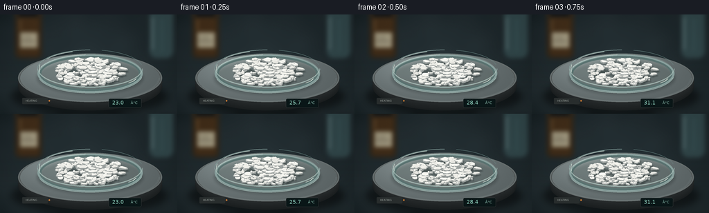

CODING AGENTS AS PIXEL WORLD MODELS
traex/GPT-6.1-Sol · phygen_117
点击播放 · 原生 RGB 像素
逐轮保存的候选
回放视频、检查图与代码变化。
每份候选均可单独播放。实际图片检查记录在下方工具轨迹中。
候选 01播放与检查图
点击播放 · 原生 RGB 像素

展开代码变化
--- 上一保存版本
+++ 本次保存版本
@@ -0,0 +1,219 @@
+"""Procedural, fixed-camera macro timelapse of naphthalene sublimation.
+Uses only local numerical geometry and pixel drawing. No source images.
+"""
+from pathlib import Path
+import math
+import numpy as np
+from PIL import Image, ImageDraw, ImageFont, ImageFilter
+from scipy.ndimage import gaussian_filter, map_coordinates
+import artifact_io
+
+ROOT=Path(__file__).resolve().parent
+W,H,S=256,144,4
+SW,SH=W*S,H*S
+rng=np.random.default_rng(117)
+
+def font(n):
+ return ImageFont.truetype('/usr/share/fonts/truetype/dejavu/DejaVuSans.ttf',round(n*S))
+
+def box(b):return tuple(round(v*S) for v in b)
+def line(draw,p,fill,width=1):draw.line([(round(x*S),round(y*S)) for x,y in p],fill=fill,width=max(1,round(width*S)))
+def ellipse(draw,b,fill=None,outline=None,width=1):draw.ellipse(box(b),fill=fill,outline=outline,width=max(1,round(width*S)))
+def poly(draw,p,fill):draw.polygon([(round(x*S),round(y*S)) for x,y in p],fill=fill)
+def proj(p):
+ x,y,z=p
+ return np.array([130+1.31*x,85+.53*y-1.12*z])
+def plane_ellipse(cx,cy,rx,ry,color,im):
+ d=ImageDraw.Draw(im);ellipse(d,(cx-rx,cy-ry,cx+rx,cy+ry),fill=color)
+
+y,x=np.mgrid[:SH,:SW].astype(float);x/=S;y/=S
+coarse=gaussian_filter(rng.normal(size=(SH,SW)),11*S)
+coarse/=coarse.std()
+fine=rng.normal(0,0.63,(SH,SW))
+light=np.exp(-((x-122)/143)**2-((y-61)/95)**2)
+base=np.stack([22+15*light,30+18*light,33+19*light],axis=-1)
+base+=coarse[:,:,None]*.95+fine[:,:,None]
+# Soft laboratory silhouettes, purposefully outside the macro focal plane.
+bg=Image.fromarray(np.uint8(np.clip(base,0,255)))
+d=ImageDraw.Draw(bg)
+d.rounded_rectangle(box((21,-10,61,64)),radius=8*S,fill=(48,39,27))
+d.rounded_rectangle(box((27,-7,54,4)),radius=2*S,fill=(21,24,25))
+d.rounded_rectangle(box((26,4,56,59)),radius=5*S,fill=(65,45,25))
+d.rectangle(box((29,26,54,48)),fill=(161,153,128))
+d.text((31*S,31*S),'C10H8',font=font(4.3),fill=(75,70,56))
+d.rectangle(box((31,38,50,40)),fill=(112,105,87))
+line(d,[(29,7),(29,23)],(127,97,58),1.3)
+d.rounded_rectangle(box((216,-12,250,63)),radius=10*S,fill=(48,69,72))
+line(d,[(220,4),(220,51)],(97,120,122),2)
+line(d,[(234,7),(234,54)],(60,92,94),1)
+# Bench vertical tonal gradient and shallow reflections.
+bg=bg.filter(ImageFilter.GaussianBlur(3*S))
+a=np.asarray(bg).astype(float)
+a+=np.exp(-((y-124)/39)**2)[:,:,None]*np.array([5,6,6])
+bg=Image.fromarray(np.uint8(np.clip(a,0,255)))
+
+# A substantial, temperature-controlled round laboratory hotplate.
+plate=bg.copy()
+shadow=Image.new('RGBA',(SW,SH));ds=ImageDraw.Draw(shadow)
+ellipse(ds,(16,91,242,146),fill=(0,0,0,120));shadow=shadow.filter(ImageFilter.GaussianBlur(5*S))
+plate=Image.alpha_composite(plate.convert('RGBA'),shadow).convert('RGB')
+d=ImageDraw.Draw(plate)
+for yy in np.arange(12,0,-.35):
+ shade=int(27+13*(1-yy/12))
+ ellipse(d,(26,57+yy,234,127+yy),fill=(shade,shade+4,shade+5))
+ellipse(d,(26,57,234,127),fill=(80,85,85),outline=(104,112,112),width=max(1,round(.5*S)))
+# Brushed metallic heating surface with directional illumination.
+mask=Image.new('L',(SW,SH));dm=ImageDraw.Draw(mask);ellipse(dm,(29,58,231,126),fill=255)
+r=np.sqrt(((x-130)/101)**2+((y-92)/34)**2)
+shine=np.exp(-((x-86)/100)**2-((y-70)/45)**2)
+texture=.9*np.sin(r*700)+rng.normal(0,.40,(SH,SW))
+metal=np.stack([91+36*shine+texture,100+38*shine+texture,101+38*shine+texture],-1)
+plate.paste(Image.fromarray(np.uint8(np.clip(metal,0,255))),(0,0),mask)
+d=ImageDraw.Draw(plate)
+for inset in [0,.8,2.2]:
+ d.arc(box((29+inset,58+inset*.32,231-inset,126-inset*.32)),0,180,fill=(116,126,126),width=max(1,int(.35*S)))
+# Small controller inset into the front apron, not an on-screen caption.
+d.rounded_rectangle(box((157,122,204,135)),radius=2*S,fill=(12,22,23),outline=(78,87,86),width=1)
+d.rounded_rectangle(box((32,121,69,130)),radius=1*S,fill=(42,47,47))
+d.text((37*S,123*S),'HEATING',font=font(3.7),fill=(163,171,166))
+ellipse(d,(70,124,72.2,126.2),fill=(202,125,56))
+
+# Transparent shallow glass evaporating dish. Base ring and reflected optics.
+d=ImageDraw.Draw(plate)
+shadow=Image.new('RGBA',(SW,SH));ds=ImageDraw.Draw(shadow)
+ellipse(ds,(53,67,207,116),fill=(8,22,22,61));shadow=shadow.filter(ImageFilter.GaussianBlur(2*S))
+plate=Image.alpha_composite(plate.convert('RGBA'),shadow).convert('RGB')
+# Light transmitted through dish makes the floor subtly brighter.
+mask=Image.new('L',(SW,SH));dm=ImageDraw.Draw(mask);ellipse(dm,(55,56,205,112),fill=55)
+tint=Image.new('RGB',(SW,SH),(170,184,178));plate=Image.composite(tint,plate,mask)
+d=ImageDraw.Draw(plate)
+ellipse(d,(54,58,206,113),outline=(139,163,160),width=max(1,round(.65*S)))
+ellipse(d,(57,60,203,111),outline=(91,116,114),width=max(1,round(.7*S)))
+d.arc(box((54,59,206,114)),10,164,fill=(168,190,184),width=max(1,round(.65*S)))
+d.arc(box((55,58,205,112)),199,265,fill=(197,216,209),width=max(1,round(.8*S)))
+
+# Fixed random collection of irregular thin crystalline flakes, in a pile.
+crystals=[]
+for i in range(230):
+ angle=rng.uniform(0,2*np.pi)
+ rr=37*np.sqrt(rng.random())
+ xx=rr*np.cos(angle); yy=rr*np.sin(angle)
+ # A compact center mound made of flat sharp-edged platelets.
+ size=rng.uniform(2.2,5.8)*(1.13-.2*rr/37)
+ z=(1-(rr/40)**2)*rng.uniform(1,7.4)
+ if i<60:z=0
+ n=int(rng.integers(5,8)); ang=np.linspace(0,2*np.pi,n,endpoint=False)+rng.uniform(0,6.28)
+ radii=rng.uniform(.76,1.12,n)
+ aspect=rng.uniform(.48,.90)
+ rot=rng.uniform(0,6.28)
+ px=np.cos(ang)*radii*size;py=np.sin(ang)*radii*size*aspect
+ shape=np.column_stack([px*np.cos(rot)-py*np.sin(rot),px*np.sin(rot)+py*np.cos(rot)])
+ thick=rng.uniform(.75,2.0)
+ death=.40+size*.109+rng.uniform(-.10,.13)
+ crystals.append(dict(x=xx,y=yy,z=z,shape=shape,h=thick,death=death,shade=rng.uniform(-8,7), seed=i))
+# Three more substantial chunks persist as tiny residues at the end.
+for i,(xx,yy) in enumerate([(-8,6),(12,-4),(3,14)]):
+ ang=np.linspace(0,2*np.pi,6,endpoint=False)+.3*i
+ shape=np.column_stack([np.cos(ang)*5.6,np.sin(ang)*3.7])
+ crystals.append(dict(x=xx,y=yy,z=8-i,shape=shape,h=2.2,death=1.21+i*.025,shade=i*2,seed=230+i))
+
+lightdir=np.array([-.46,-.44,.77]);lightdir/=np.linalg.norm(lightdir)
+
+def make_mesh(c,t):
+ f=max(0,1-t/c['death'])
+ if f<.007:return None
+ scale=f**.63
+ pos=np.array([c['x'],c['y']])
+ xy=pos+c['shape']*scale
+ zz=c['z']*max(0,1-t)**1.65
+ bot=np.column_stack([xy,np.full(len(xy),zz)])
+ # tilted, imperfect top facets rather than smooth spherical mothballs.
+ theta=c['seed']*.923
+ tilt=np.array([math.cos(theta),math.sin(theta)])*.095
+ top=bot.copy();top[:,2]+=c['h']*scale+(xy-pos)@tilt
+ cent=np.r_[pos,zz+c['h']*scale+.44*scale]
+ faces=[]
+ for j in range(len(xy)):
+ k=(j+1)%len(xy)
+ faces.append((np.array([bot[j],bot[k],top[k],top[j]]),'side',j))
+ faces.append((np.array([top[j],top[k],cent]),'top',j))
+ return faces,xy,zz,scale
+
+def draw_crystals(im,t):
+ faces=[];sh=Image.new('RGBA',(SW,SH));dd=ImageDraw.Draw(sh)
+ meshes=[]
+ for c in crystals:
+ mesh=make_mesh(c,t)
+ if mesh is None:continue
+ fs,xy,zz,scale=mesh
+ pp=[proj([p[0]+1.1+zz*.3,p[1]+1.8+zz*.3,0]) for p in xy]
+ poly(dd,pp,(20,29,28,int(100*min(1,scale*2))))
+ meshes.append((c,mesh))
+ sh=sh.filter(ImageFilter.GaussianBlur(.85*S))
+ im=Image.alpha_composite(im.convert('RGBA'),sh).convert('RGB')
+ dd=ImageDraw.Draw(im)
+ for c,mesh in meshes:
+ for verts,typ,j in mesh[0]:
+ normal=np.cross(verts[1]-verts[0],verts[2]-verts[0])
+ normal/=np.linalg.norm(normal)+1e-8
+ if typ=='top' and normal[2]<0:normal=-normal
+ # Camera sees the front-facing edges; keep geometry opaque.
+ camera=np.array([0,1,1.7])
+ if typ=='side' and normal@camera<0:continue
+ lighting=max(0,float(normal@lightdir))
+ if typ=='top':
+ value=211+lighting*39+c['shade']+3*math.sin(c['seed']*7+j*3)
+ color=(value+2,value+2,value-4)
+ else:
+ value=148+lighting*65+c['shade']
+ color=(value+6,value+12,value+10)
+ color=tuple(np.clip(color,0,255).astype(int))
+ depth=np.mean(verts[:,1]-verts[:,2]*.65)
+ faces.append((depth,[proj(v) for v in verts],color,typ,c,j))
+ faces.sort(key=lambda e:e[0])
+ for _,points,color,typ,c,j in faces:
+ poly(dd,points,color)
+ # Hairline frost/crystal edge catches the upper-left key light.
+ if typ=='top' and j%3==0:
+ edge=tuple(min(255,v+9) for v in color)
+ line(dd,points[:2],edge,.18)
+ return im
+
+frames=[]
+for i in range(20):
+ p=i/19
+ t=p*1.18
+ im=plate.copy()
+ # Gentle optical heat shimmer, never smoke: naphthalene vapor is colorless.
+ if p>.3:
+ arr=np.asarray(im)
+ sy,sx=np.mgrid[:SH,:SW].astype(float)
+ env=np.exp(-((sx/S-132)/47)**4-((sy/S-51)/20)**4)
+ warp=.18*S*(p-.3)*env*np.sin(sy/(5*S)+p*13)
+ arr=np.stack([map_coordinates(arr[:,:,ch],[sy,sx+warp],order=1,mode='nearest') for ch in range(3)],-1)
+ im=Image.fromarray(arr.astype(np.uint8))
+ im=draw_crystals(im,t)
+ d=ImageDraw.Draw(im)
+ # The glass lip is in front of the contents; near arc has brighter reflections.
+ d.arc(box((54,51,206,106)),0,180,fill=(160,184,179),width=max(1,round(.8*S)))
+ d.arc(box((55.2,52.5,204.8,105)),8,170,fill=(203,220,212),width=max(1,round(.55*S)))
+ d.arc(box((54,51,206,106)),181,270,fill=(134,163,159),width=max(1,round(.65*S)))
+ d.arc(box((56,52,204,104)),212,250,fill=(208,224,216),width=max(1,round(.85*S)))
+ d.arc(box((54,51,206,106)),283,348,fill=(109,140,137),width=max(1,round(.5*S)))
+ # Two localized specular glints make the transparent rim read as glass.
+ line(d,[(57.5,72.5),(56.5,77),(57.3,83)],(215,228,219),.75)
+ line(d,[(196.8,93),(191.8,97.0),(185.5,99.3)],(229,239,228),.65)
+ d.rounded_rectangle(box((159,123,202,134)),radius=1*S,fill=(10,23,24))
+ temp=23+51*p
+ d.text((162*S,123.4*S),f'{temp:04.1f}',font=font(7.4),fill=(151,219,199))
+ d.text((188.8*S,125*S),'°C',font=font(5.3),fill=(147,199,183))
+ # Restrained photographic grain and peripheral lens falloff.
+ a=np.asarray(im).astype(float)
+ vignette=1-.105*((x-129)/171)**2-.065*((y-79)/111)**2
+ a*=vignette[:,:,None]
+ noise=np.random.default_rng(4700+i).normal(0,.43,(SH,SW,1))
+ a=np.uint8(np.clip(a+noise,0,255))
+ im=Image.fromarray(a).resize((W,H),Image.Resampling.LANCZOS)
+ frames.append(np.asarray(im))
+artifact_io.save(np.stack(frames).astype(np.uint8),ROOT)
+print('Saved 20 RGB frames at 256 Ã 144, 4 fps.')
候选 02播放与检查图
点击播放 · 原生 RGB 像素


展开代码变化
--- 上一保存版本
+++ 本次保存版本
@@ -206,7 +206,7 @@
d.rounded_rectangle(box((159,123,202,134)),radius=1*S,fill=(10,23,24))
temp=23+51*p
d.text((162*S,123.4*S),f'{temp:04.1f}',font=font(7.4),fill=(151,219,199))
- d.text((188.8*S,125*S),'°C',font=font(5.3),fill=(147,199,183))
+ d.text((188.8*S,125*S),'\u00b0C',font=font(5.3),fill=(147,199,183))
# Restrained photographic grain and peripheral lens falloff.
a=np.asarray(im).astype(float)
vignette=1-.105*((x-129)/171)**2-.065*((y-79)/111)**2
@@ -216,4 +216,4 @@
im=Image.fromarray(a).resize((W,H),Image.Resampling.LANCZOS)
frames.append(np.asarray(im))
artifact_io.save(np.stack(frames).astype(np.uint8),ROOT)
-print('Saved 20 RGB frames at 256 Ã 144, 4 fps.')
+print('Saved 20 RGB frames at 256 x 144, 4 fps.')
候选 03播放与检查图
可观测工具轨迹
实际执行的命令与返回图片。
命令 1exit 0
/bin/bash -lc 'ls -la && cat prompt.txt && cat GENERATION_RULES.md && cat task_spec.json'
命令 2exit 0
/bin/bash -lc "cat artifact_io.py && python - <<'PY' import importlib.util for mod in ['numpy','PIL','scipy']: print(mod, bool(importlib.util.find_spec(mod))) PY"
命令 3exit 0
/bin/bash -lc 'fc-list | head -8'
命令 4exit 1
/bin/bash -lc "cat > generate.py <<'PY'
\"\"\"Procedural, fixed-camera macro timelapse of naphthalene sublimation.
Uses only local numerical geometry and pixel drawing. No source images.
\"\"\"
from pathlib import Path
import math
import numpy as np
from PIL import Image, ImageDraw, ImageFont, ImageFilter
from scipy.ndimage import gaussian_filter, map_coordinates
import artifact_io
ROOT=Path(__file__).resolve().parent
W,H,S=256,144,4
SW,SH=W*S,H*S
rng=np.random.default_rng(117)
def font(n):
return ImageFont.truetype('/usr/share/fonts/truetype/dejavu/DejaVuSans.ttf',round(n*S))
def box(b):return tuple(round(v*S) for v in b)
def line(draw,p,fill,width=1):draw.line([(round(x*S),round(y*S)) for x,y in p],fill=fill,width=max(1,round(width*S)))
def ellipse(draw,b,fill=None,outline=None,width=1):draw.ellipse(box(b),fill=fill,outline=outline,width=max(1,round(width*S)))
def poly(draw,p,fill):draw.polygon([(round(x*S),round(y*S)) for x,y in p],fill=fill)
def proj(p):
x,y,z=p
return np.array([130+1.31*x,85+.53*y-1.12*z])
def plane_ellipse(cx,cy,rx,ry,color,im):
d=ImageDraw.Draw(im);ellipse(d,(cx-rx,cy-ry,cx+rx,cy+ry),fill=color)
y,x=np.mgrid[:SH,:SW].astype(float);x/=S;y/=S
coarse=gaussian_filter(rng.normal(size=(SH,SW)),11*S)
coarse/=coarse.std()
fine=rng.normal(0,0.63,(SH,SW))
light=np.exp(-((x-122)/143)**2-((y-61)/95)**2)
base=np.stack([22+15*light,30+18*light,33+19*light],axis=-1)
base+=coarse[:,:,None]*.95+fine[:,:,None]
# Soft laboratory silhouettes, purposefully outside the macro focal plane.
bg=Image.fromarray(np.uint8(np.clip(base,0,255)))
d=ImageDraw.Draw(bg)
d.rounded_rectangle(box((21,-10,61,64)),radius=8*S,fill=(48,39,27))
d.rounded_rectangle(box((27,-7,54,4)),radius=2*S,fill=(21,24,25))
d.rounded_rectangle(box((26,4,56,59)),radius=5*S,fill=(65,45,25))
d.rectangle(box((29,26,54,48)),fill=(161,153,128))
d.text((31*S,31*S),'C10H8',font=font(4.3),fill=(75,70,56))
d.rectangle(box((31,38,50,40)),fill=(112,105,87))
line(d,[(29,7),(29,23)],(127,97,58),1.3)
d.rounded_rectangle(box((216,-12,250,63)),radius=10*S,fill=(48,69,72))
line(d,[(220,4),(220,51)],(97,120,122),2)
line(d,[(234,7),(234,54)],(60,92,94),1)
# Bench vertical tonal gradient and shallow reflections.
bg=bg.filter(ImageFilter.GaussianBlur(3*S))
a=np.asarray(bg).astype(float)
a+=np.exp(-((y-124)/39)**2)[:,:,None]*np.array([5,6,6])
bg=Image.fromarray(np.uint8(np.clip(a,0,255)))
# A substantial, temperature-controlled round laboratory hotplate.
plate=bg.copy()
shadow=Image.new('RGBA',(SW,SH));ds=ImageDraw.Draw(shadow)
ellipse(ds,(16,91,242,146),fill=(0,0,0,120));shadow=shadow.filter(ImageFilter.GaussianBlur(5*S))
plate=Image.alpha_composite(plate.convert('RGBA'),shadow).convert('RGB')
d=ImageDraw.Draw(plate)
for yy in np.arange(12,0,-.35):
shade=int(27+13*(1-yy/12))
ellipse(d,(26,57+yy,234,127+yy),fill=(shade,shade+4,shade+5))
ellipse(d,(26,57,234,127),fill=(80,85,85),outline=(104,112,112),width=.5)
# Brushed metallic heating surface with directional illumination.
mask=Image.new('L',(SW,SH));dm=ImageDraw.Draw(mask);ellipse(dm,(29,58,231,126),fill=255)
r=np.sqrt(((x-130)/101)**2+((y-92)/34)**2)
shine=np.exp(-((x-86)/100)**2-((y-70)/45)**2)
texture=.9*np.sin(r*700)+rng.normal(0,.40,(SH,SW))
metal=np.stack([91+36*shine+texture,100+38*shine+texture,101+38*shine+texture],-1)
plate.paste(Image.fromarray(np.uint8(np.clip(metal,0,255))),(0,0),mask)
d=ImageDraw.Draw(plate)
for inset in [0,.8,2.2]:
d.arc(box((29+inset,58+inset*.32,231-inset,126-inset*.32)),0,180,fill=(116,126,126),width=max(1,int(.35*S)))
# Small controller inset into the front apron, not an on-screen caption.
d.rounded_rectangle(box((157,122,204,135)),radius=2*S,fill=(12,22,23),outline=(78,87,86),width=1)
d.rounded_rectangle(box((32,121,69,130)),radius=1*S,fill=(42,47,47))
d.text((37*S,123*S),'HEATING',font=font(3.7),fill=(163,171,166))
ellipse(d,(70,124,72.2,126.2),fill=(202,125,56))
# Transparent shallow glass evaporating dish. Base ring and reflected optics.
d=ImageDraw.Draw(plate)
shadow=Image.new('RGBA',(SW,SH));ds=ImageDraw.Draw(shadow)
ellipse(ds,(53,67,207,116),fill=(8,22,22,61));shadow=shadow.filter(ImageFilter.GaussianBlur(2*S))
plate=Image.alpha_composite(plate.convert('RGBA'),shadow).convert('RGB')
# Light transmitted through dish makes the floor subtly brighter.
mask=Image.new('L',(SW,SH));dm=ImageDraw.Draw(mask);ellipse(dm,(55,56,205,112),fill=55)
tint=Image.new('RGB',(SW,SH),(170,184,178));plate=Image.composite(tint,plate,mask)
d=ImageDraw.Draw(plate)
ellipse(d,(54,58,206,113),outline=(139,163,160),width=.65)
ellipse(d,(57,60,203,111),outline=(91,116,114),width=.7)
d.arc(box((54,59,206,114)),10,164,fill=(168,190,184),width=.65)
d.arc(box((55,58,205,112)),199,265,fill=(197,216,209),width=.8)
# Fixed random collection of irregular thin crystalline flakes, in a pile.
crystals=[]
for i in range(230):
angle=rng.uniform(0,2*np.pi)
rr=37*np.sqrt(rng.random())
xx=rr*np.cos(angle); yy=rr*np.sin(angle)
# A compact center mound made of flat sharp-edged platelets.
size=rng.uniform(2.2,5.8)*(1.13-.2*rr/37)
z=(1-(rr/40)**2)*rng.uniform(1,7.4)
if i<60:z=0
n=int(rng.integers(5,8)); ang=np.linspace(0,2*np.pi,n,endpoint=False)+rng.uniform(0,6.28)
radii=rng.uniform(.76,1.12,n)
aspect=rng.uniform(.48,.90)
rot=rng.uniform(0,6.28)
px=np.cos(ang)*radii*size;py=np.sin(ang)*radii*size*aspect
shape=np.column_stack([px*np.cos(rot)-py*np.sin(rot),px*np.sin(rot)+py*np.cos(rot)])
thick=rng.uniform(.75,2.0)
death=.40+size*.109+rng.uniform(-.10,.13)
crystals.append(dict(x=xx,y=yy,z=z,shape=shape,h=thick,death=death,shade=rng.uniform(-8,7), seed=i))
# Three more substantial chunks persist as tiny residues at the end.
for i,(xx,yy) in enumerate([(-8,6),(12,-4),(3,14)]):
ang=np.linspace(0,2*np.pi,6,endpoint=False)+.3*i
shape=np.column_stack([np.cos(ang)*5.6,np.sin(ang)*3.7])
crystals.append(dict(x=xx,y=yy,z=8-i,shape=shape,h=2.2,death=1.21+i*.025,shade=i*2,seed=230+i))
lightdir=np.array([-.46,-.44,.77]);lightdir/=np.linalg.norm(lightdir)
def make_mesh(c,t):
f=max(0,1-t/c['death'])
if f<.007:return None
scale=f**.63
pos=np.array([c['x'],c['y']])
xy=pos+c['shape']*scale
zz=c['z']*max(0,1-t)**1.65
bot=np.column_stack([xy,np.full(len(xy),zz)])
# tilted, imperfect top facets rather than smooth spherical mothballs.
theta=c['seed']*.923
tilt=np.array([math.cos(theta),math.sin(theta)])*.095
top=bot.copy();top[:,2]+=c['h']*scale+(xy-pos)@tilt
cent=np.r_[pos,zz+c['h']*scale+.44*scale]
faces=[]
for j in range(len(xy)):
k=(j+1)%len(xy)
faces.append((np.array([bot[j],bot[k],top[k],top[j]]),'side',j))
faces.append((np.array([top[j],top[k],cent]),'top',j))
return faces,xy,zz,scale
def draw_crystals(im,t):
faces=[];sh=Image.new('RGBA',(SW,SH));dd=ImageDraw.Draw(sh)
meshes=[]
for c in crystals:
mesh=make_mesh(c,t)
if mesh is None:continue
fs,xy,zz,scale=mesh
pp=[proj([p[0]+1.1+zz*.3,p[1]+1.8+zz*.3,0]) for p in xy]
poly(dd,pp,(20,29,28,int(100*min(1,scale*2))))
meshes.append((c,mesh))
sh=sh.filter(ImageFilter.GaussianBlur(.85*S))
im=Image.alpha_composite(im.convert('RGBA'),sh).convert('RGB')
dd=ImageDraw.Draw(im)
for c,mesh in meshes:
for verts,typ,j in mesh[0]:
normal=np.cross(verts[1]-verts[0],verts[2]-verts[0])
normal/=np.linalg.norm(normal)+1e-8
if typ=='top' and normal[2]<0:normal=-normal
# Camera sees the front-facing edges; keep geometry opaque.
camera=np.array([0,1,1.7])
if typ=='side' and normal@camera<0:continue
lighting=max(0,float(normal@lightdir))
if typ=='top':
value=211+lighting*39+c['shade']+3*math.sin(c['seed']*7+j*3)
color=(value+2,value+2,value-4)
else:
value=148+lighting*65+c['shade']
color=(value+6,value+12,value+10)
color=tuple(np.clip(color,0,255).astype(int))
depth=np.mean(verts[:,1]-verts[:,2]*.65)
faces.append((depth,[proj(v) for v in verts],color,typ,c,j))
faces.sort(key=lambda e:e[0])
for _,points,color,typ,c,j in faces:
poly(dd,points,color)
# Hairline frost/crystal edge catches the upper-left key light.
if typ=='top' and j%3==0:
edge=tuple(min(255,v+9) for v in color)
line(dd,points[:2],edge,.18)
return im
frames=[]
for i in range(20):
p=i/19
t=p*1.18
im=plate.copy()
# Gentle optical heat shimmer, never smoke: naphthalene vapor is colorless.
if p>.3:
arr=np.asarray(im)
sy,sx=np.mgrid[:SH,:SW].astype(float)
env=np.exp(-((sx/S-132)/47)**4-((sy/S-51)/20)**4)
warp=.18*S*(p-.3)*env*np.sin(sy/(5*S)+p*13)
arr=np.stack([map_coordinates(arr[:,:,ch],[sy,sx+warp],order=1,mode='nearest') for ch in range(3)],-1)
im=Image.fromarray(arr.astype(np.uint8))
im=draw_crystals(im,t)
d=ImageDraw.Draw(im)
# The glass lip is in front of the contents; near arc has brighter reflections.
d.arc(box((54,51,206,106)),0,180,fill=(160,184,179),width=.8)
d.arc(box((55.2,52.5,204.8,105)),8,170,fill=(203,220,212),width=.55)
d.arc(box((54,51,206,106)),181,270,fill=(134,163,159),width=.65)
d.arc(box((56,52,204,104)),212,250,fill=(208,224,216),width=.85)
d.arc(box((54,51,206,106)),283,348,fill=(109,140,137),width=.5)
# Two localized specular glints make the transparent rim read as glass.
line(d,[(57.5,72.5),(56.5,77),(57.3,83)],(215,228,219),.75)
line(d,[(196.8,93),(191.8,97.0),(185.5,99.3)],(229,239,228),.65)
d.rounded_rectangle(box((159,123,202,134)),radius=1*S,fill=(10,23,24))
temp=23+51*p
d.text((162*S,123.4*S),f'{temp:04.1f}',font=font(7.4),fill=(151,219,199))
d.text((188.8*S,125*S),'°C',font=font(5.3),fill=(147,199,183))
# Restrained photographic grain and peripheral lens falloff.
a=np.asarray(im).astype(float)
vignette=1-.105*((x-129)/171)**2-.065*((y-79)/111)**2
a*=vignette[:,:,None]
noise=np.random.default_rng(4700+i).normal(0,.43,(SH,SW,1))
a=np.uint8(np.clip(a+noise,0,255))
im=Image.fromarray(a).resize((W,H),Image.Resampling.LANCZOS)
frames.append(np.asarray(im))
artifact_io.save(np.stack(frames).astype(np.uint8),ROOT)
print('Saved 20 RGB frames at 256 Ã 144, 4 fps.')
PY
python generate.py"命令 5exit 0
/bin/bash -lc "python - <<'PY'
p='generate.py'
s=open(p).read()
import re
s=re.sub(r'width=(\\.\\d+)\\)',r'width=max(1,round(\\1*S)))',s)
s=s.replace('ðC','°C').replace('ÃÂ','Ã')
open(p,'w').write(s)
PY
python generate.py"命令 6exit 0
/bin/bash -lc "python - <<'PY'
p='generate.py'
s=open(p).read().replace(\"'ðC'\", \"'\\\\u00b0C'\").replace(\"print('Saved 20 RGB frames at 256 à144, 4 fps.')\", \"print('Saved 20 RGB frames at 256 x 144, 4 fps.')\")
open(p,'w').write(s)
PY
python generate.py
python - <<'PY'
import numpy as np
from pathlib import Path
z=np.load('pixels.npz')['pixels']
print('Packed RGB tensor:', z.shape, z.dtype)
print('Frame PNGs:',len(list(Path('frames').glob('*.png'))))
print('Player and inspection exist:',Path('index.html').exists(),Path('inspection.png').exists())
PY"命令 7exit 0
/bin/bash -lc "python - <<'PY'
for l in open('generate.py'):
if '188.8' in l or 'Saved' in l:print(ascii(l))
PY"命令 8exit 0
/bin/bash -lc "python - <<'PY'
p='generate.py'
lines=open(p).readlines()
for i,l in enumerate(lines):
if 'd.text((188.8' in l:lines[i]=\" d.text((188.8*S,125*S),'\\\\u00b0C',font=font(5.3),fill=(147,199,183))\\n\"
if l.startswith(\"print('Saved\"):lines[i]=\"print('Saved 20 RGB frames at 256 x 144, 4 fps.')\\n\"
open(p,'w').writelines(lines)
PY
python generate.py"视觉工具实际返回图片 1
保存候选 3 份；完成命令 8 次；可验证图片返回 1 张。原始 API 响应与完整日志保留在本地。